授权实景图
授权实景图
深圳科学技术馆
深圳科学技术馆位于光明中心区，大型综合科技馆以互动展项、基础科学和未来产业连接光明科学城，内容体量足以单独安排半天以上。…
DISTRICT GUIDE · 23 PLACES
科学城、科技馆、湿地和长距离绿道正在形成新的周末目的地。
SMALL PICKS
依波钟表文化博物馆、惜物博物馆和楼村湿地公园，需要预约或查开放，但主题差异很大。
票务概览：明确标注收费 3 个；其余条目可能免费、预约或按项目计费，出发前以详情页和官方公告为准。
ALL PLACES
授权实景图
深圳科学技术馆位于光明中心区，大型综合科技馆以互动展项、基础科学和未来产业连接光明科学城，内容体量足以单独安排半天以上。…
 编辑配图·非现场实景
编辑配图·非现场实景
光明科学公园位于光明中心区科技馆周边，生态水体、草地和科学主题公共空间围绕科技馆展开，是消化室内参观内容而非复制互动展项…
 授权实景图
授权实景图
虹桥公园位于光明，醒目的红色长桥穿过森林与坡地，把城市入口、观景平台和大顶岭方向连接起来，桥长与日晒不可低估。这处地点的…
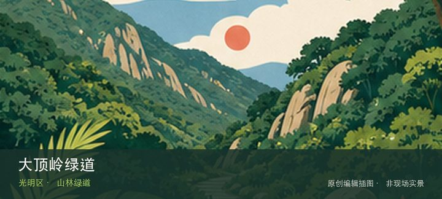
编辑配图·非现场实景大顶岭绿道位于光明大顶岭山地，浮桥、探桥和悬桥等热门节点散布在山林绿道中，节点间距离、坡度和雨后湿滑比照片中更实际。与同…
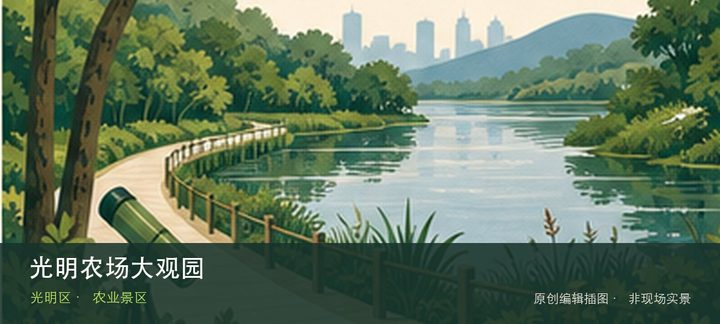
编辑配图·非现场实景光明农场大观园位于光明街道，农业展示、动物互动和乡村体验按经营项目组织，票价、表演和亲子设施会随运营日历变化。若只匆匆经…
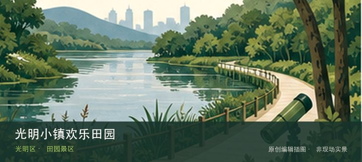
编辑配图·非现场实景光明小镇欢乐田园位于光明田园片区，大片花田、稻田景观和节庆活动构成季节性目的地，非花期的农业肌理与活动内容需要重新设定预…
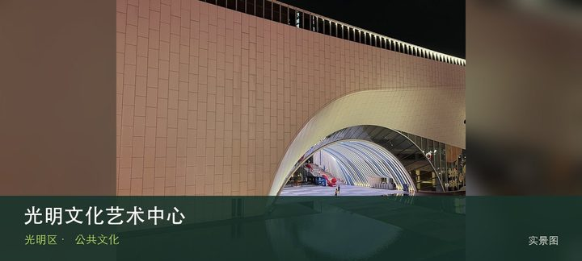
授权实景图光明文化艺术中心位于光明中心区，图书馆、演艺和美术空间集中在大型公共建筑中，适合把看展、阅读与演出按预约组合成全天候文化…
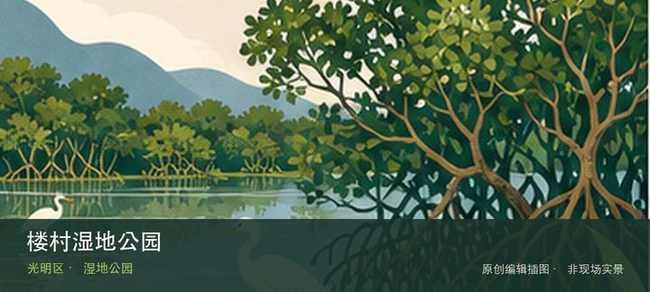
编辑配图·非现场实景楼村湿地公园位于新湖楼村，社区湿地、水生植物和慢行步道提供小尺度自然观察，重点在河网修复与居民日常而非稀有物种打卡。从楼…
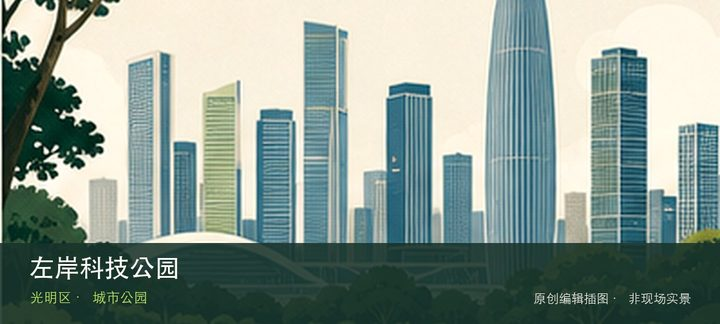
编辑配图·非现场实景左岸科技公园位于光明科学城，科研机构周边的开放绿地、建筑界面和水岸空间呈现科学城日常，适合观察新型产业园区如何提供公共空…
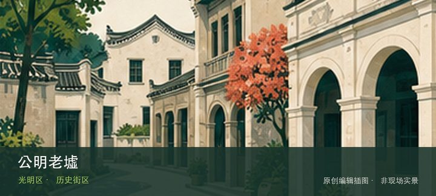
编辑配图·非现场实景公明老墟位于公明街道，传统墟市街巷、旧商铺和仍在经营的社区商业保留光明本地生活尺度，更新与日常经营同时发生。这里不是只有…
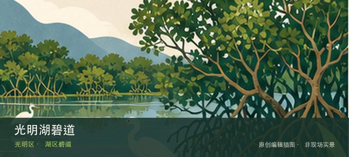
编辑配图·非现场实景光明湖碧道位于光明湖区，湖岸慢行、骑行和生态水体构成长线公共空间，开放段与施工连接会变化，不宜把旧轨迹当作连续保证。这处…
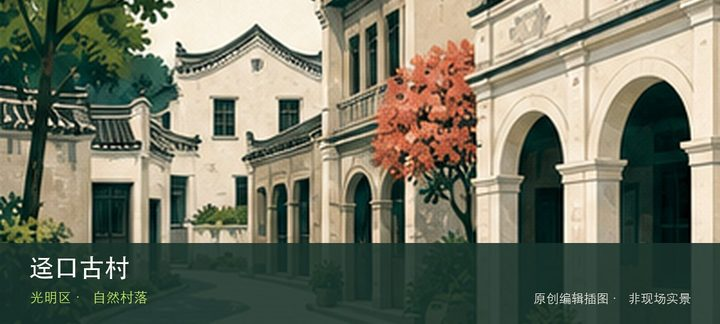
编辑配图·非现场实景迳口古村位于光明街道迳口，客家村落、田园和周边农事景观保持城郊尺度，活动交通和居民生活边界比网红拍摄路线更重要。若只匆匆…
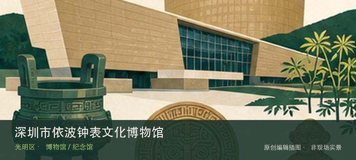
编辑配图·非现场实景深圳市依波钟表文化博物馆位于金安路产业园，钟表机械、计时原理和品牌制造构成从技术到工业设计的专题，企业园区参观须提前预约…
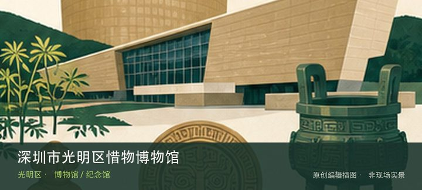
编辑配图·非现场实景深圳市光明区惜物博物馆位于公明，以旧物、日常器具和节约生活理念为线索，通过普通物件观察消费变化与物尽其用的社会记忆。从日…
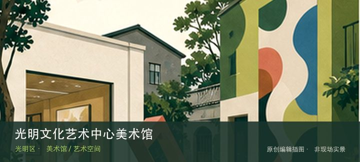
编辑配图·非现场实景光明文化艺术中心美术馆位于光明文化艺术中心，区级美术馆依托综合文化中心推出当代艺术、本地文化和公共教育展览，可与阅读或演…
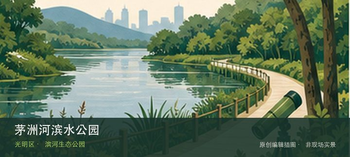
编辑配图·非现场实景茅洲河滨水公园位于茅洲河光明段，超过186公顷的连续滨水空间展示河流治理、生态岸线与城市慢行系统，适合按桥梁节点分段。这…
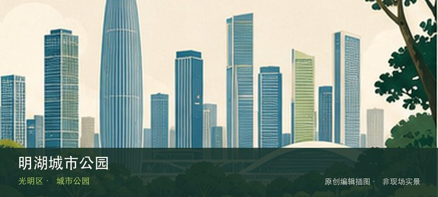
编辑配图·非现场实景明湖城市公园位于凤凰街道塘明路与根玉路交会处，约59公顷的新型城市公园以开阔水面、草坡和科学城周边公共空间形成光明南部绿…
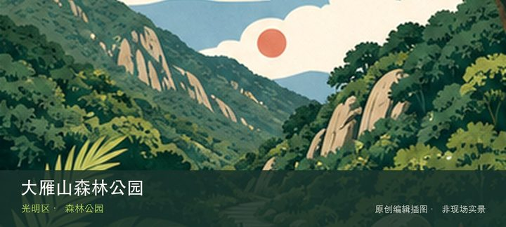
编辑配图·非现场实景大雁山森林公园位于玉塘街道长圳社区长圳新村长凤路365号，1.61平方公里的低开发森林公园以约5公里环山园路、登山步道、…
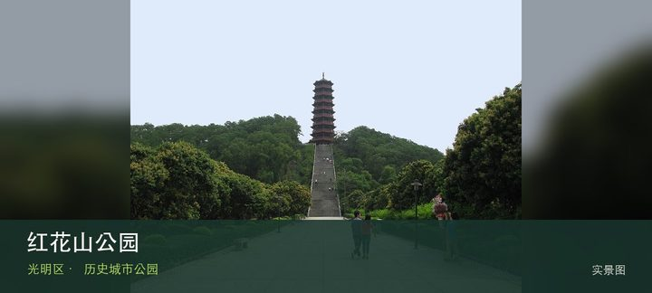
授权实景图红花山公园位于公明街道振明路88号，公明老城区的山体公园以红花山塔、林荫台阶和老墟视野构成短线登高路线。从红花山塔转向公…
科学城智慧公园位于光明区圳美大道，科学城公共空间以智慧设施、雨洪花园和研发园区界面呈现科技新城的日常使用方式。这处地点的…
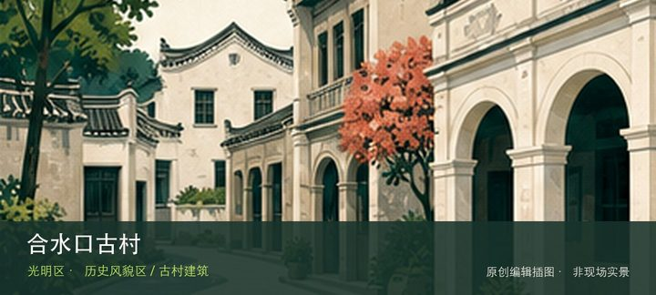
编辑配图·非现场实景合水口古村位于马田街道合水口社区，始建历史可追溯至明代的广府村落以梳式布局、祠堂和武术传统承载公明片区历史。与同类地点相…
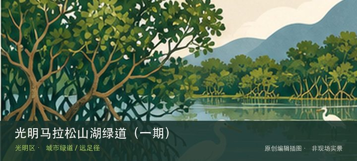
编辑配图·非现场实景光明马拉松山湖绿道（一期）位于圳美社区至观光路，约26.74公里山湖长线串联大顶岭森林公园、公明水库与三座标志性桥，核心…
光明红木文化小镇以红木家具、工艺展示和产业文化体验为主要线索，把传统工艺、商业街区和城市近郊游放在光明公明片区里。它更适…